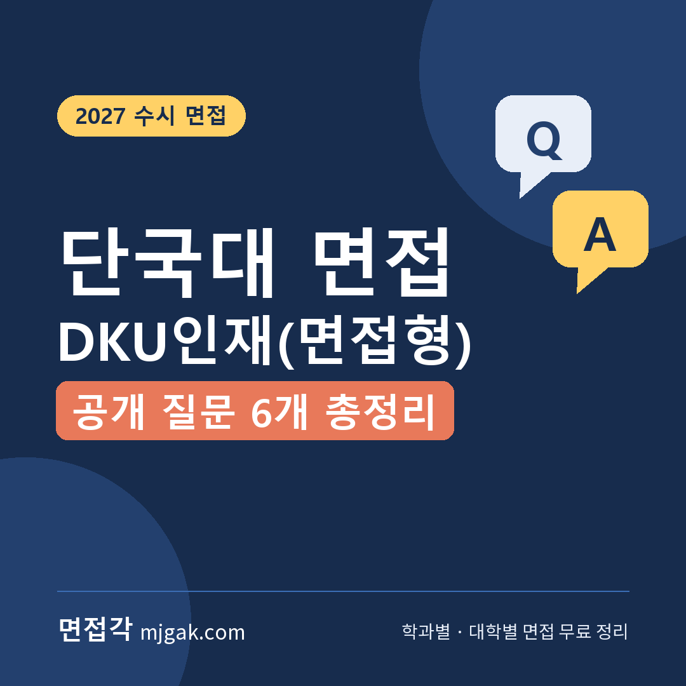
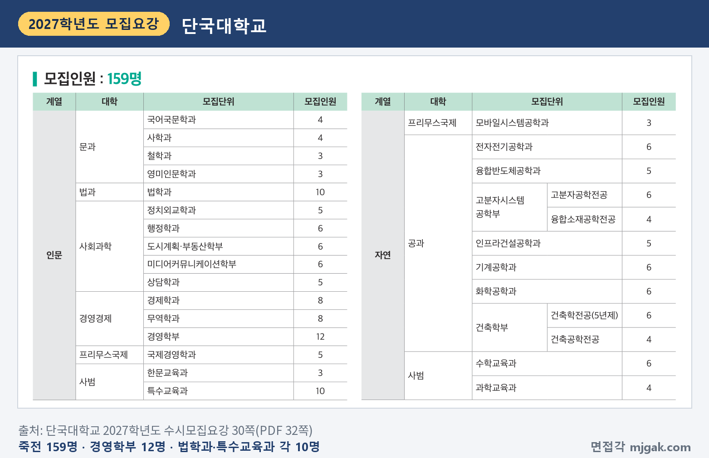
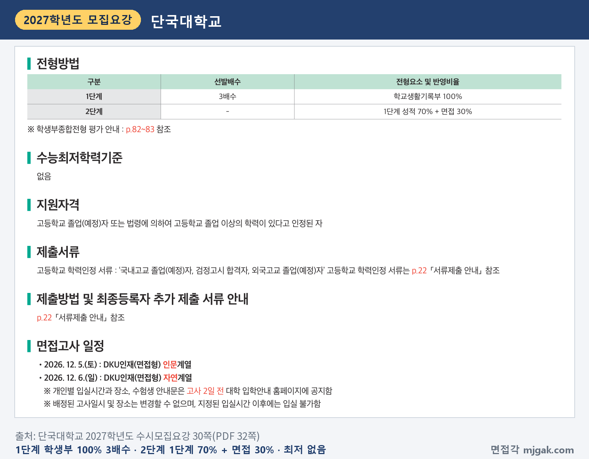
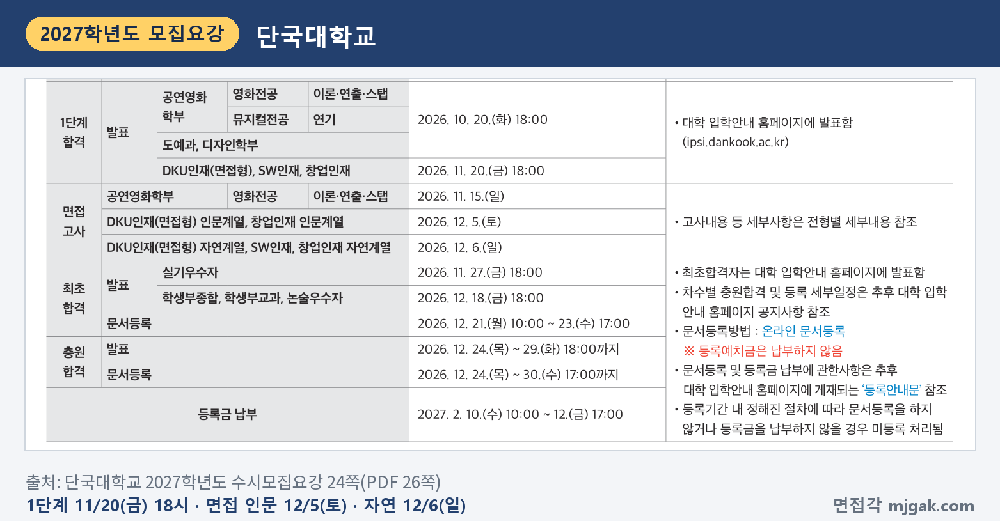
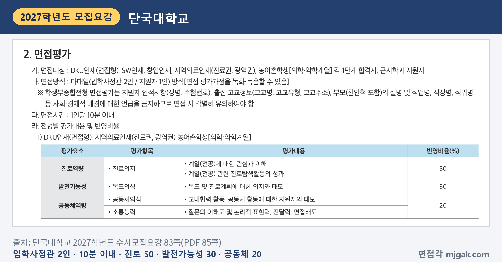
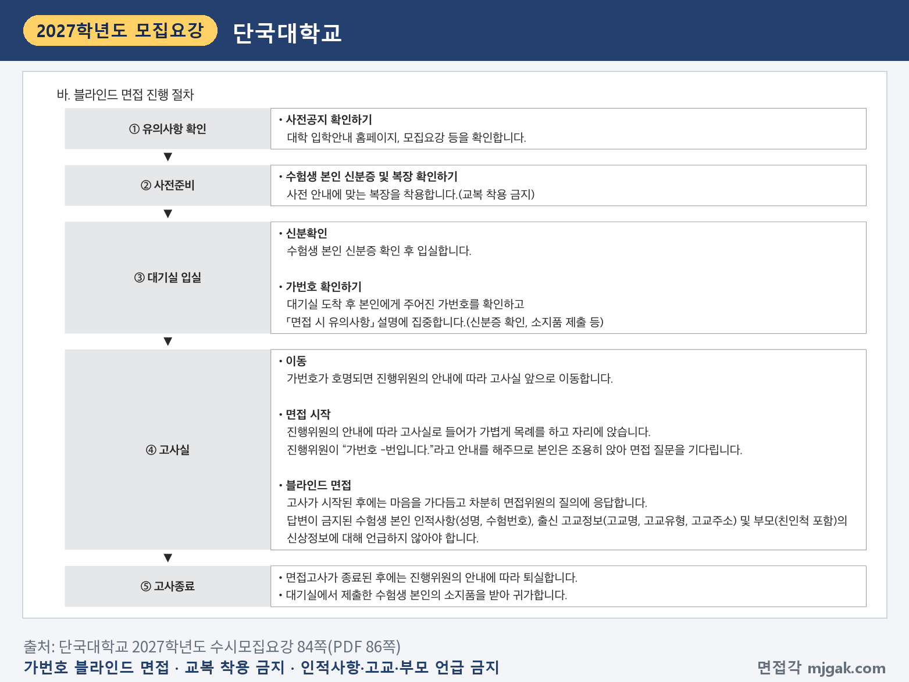
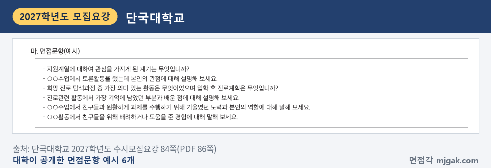
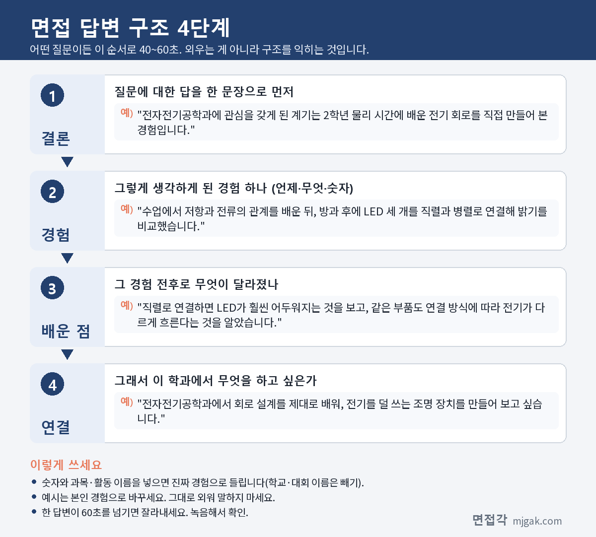
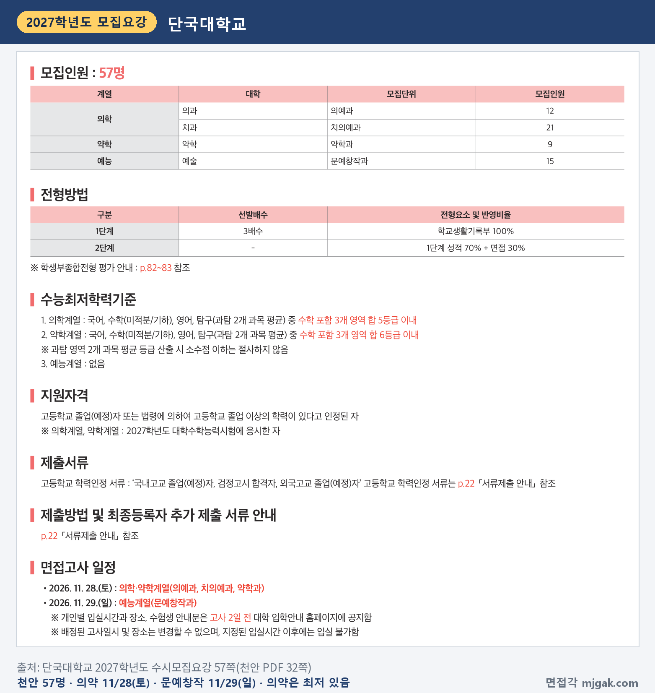

Ctrl+V (서식 유지됨)제목
본문 (이 영역 전체가 복사됩니다)
📷 여기에 이미지 넣기 — 썸네일 — thumb-dku.png (대표 이미지로 지정)
단국대 DKU인재(면접형)에서 일정상 먼저 챙길 것은 1단계 발표가 수능 다음 날이라는 점입니다. 수능은 11월 19일(목)이고, 1단계 합격자 발표는 11월 20일(금) 오후 6시입니다. 죽전캠퍼스 면접은 인문계열이 12월 5일(토), 자연계열이 12월 6일(일)입니다. 2단계는 1단계 성적 70%와 면접 30%를 합산하고, 면접은 입학사정관 2명이 지원자 1명을 10분 이내로 보는 블라인드 면접입니다. 면접 평가의 50%가 진로역량입니다. 그리고 단국대는 모집요강에 면접문항 예시 6개를 공개했습니다. 이 글은 단국대학교 2027학년도 수시모집요강을 바탕으로 죽전캠퍼스 DKU인재(면접형)의 전형 방법과 일정, 면접 방식, 공개 질문 6개의 답변법, 준비 순서를 정리하고, 천안캠퍼스는 따로 묶었습니다. DKU인재(면접형)에 지원한 고3과 재수생이 읽으시면 됩니다.
1. DKU인재(면접형), 2027학년도에는 어떻게 보나
죽전캠퍼스 DKU인재(면접형)는 학생부종합전형으로 159명을 뽑습니다(30쪽). 모집단위별 인원을 더해 이 글에서 계산하면 인문계열 98명, 자연계열 61명입니다. 인원이 많은 곳은 경영학부 12명, 법학과·특수교육과 각 10명, 경제학과·무역학과 각 8명입니다. 자연계열은 전자전기공학과·기계공학과·화학공학과 등 6개 모집단위가 각 6명입니다(30쪽). 검정고시 합격자와 외국 고등학교 졸업(예정)자도 지원할 수 있습니다(25쪽). 모집요강의 주요 변경사항(17쪽)에 죽전캠퍼스 DKU인재(면접형) 항목은 없습니다.
📷 여기에 이미지 넣기 — 캡처 1 — 단국대학교 2027학년도 수시모집요강 30쪽(PDF 32쪽): dku-2027-units.png
전형 방법은 1단계에서 학교생활기록부 100%로 모집인원의 3배수를 뽑고, 2단계에서 1단계 성적 70%와 면접 30%를 합산합니다. 수능최저학력기준은 없습니다(30쪽). 이 글에서 모집인원에 3을 곱해 계산하면 경영학부(12명)는 36명, 법학과(10명)는 30명이 1단계 합격 규모입니다. 1단계에서는 동점자를 전원 선발하므로(26쪽) 실제 인원은 이보다 많을 수 있습니다.
📷 여기에 이미지 넣기 — 캡처 2 — 단국대학교 2027학년도 수시모집요강 30쪽(PDF 32쪽): dku-2027-method.png
2단계 동점자는 면접평가 점수로 가립니다(26쪽). 대학별고사 결시자(부분결시자 포함)와 신분 미확인자는 합격자 선발대상에서 제외합니다(26쪽). 학교폭력 조치사항은 학생부종합전형에서 정성평가하고, 1단계 서류평가의 공동체역량에서 반영합니다(81쪽). 전형료는 95,000원(1단계 60,000원, 2단계 35,000원)이고, 1단계에서 불합격하면 2단계 전형료를 돌려줍니다(85쪽).
2. 언제 보나: 수능 다음 날 1단계 발표, 15일 뒤 인문계열 면접
1단계 합격자 발표는 11월 20일(금) 오후 6시, 대학 입학안내 홈페이지(ipsi.dankook.ac.kr)에서 합니다(24쪽). 본인이 직접 조회해야 하고 전화로는 조회할 수 없습니다(20쪽).
면접은 계열에 따라 이틀로 나뉩니다(24·30쪽).
- 12월 5일(토): DKU인재(면접형) 인문계열
- 12월 6일(일): DKU인재(면접형) 자연계열
사범대학은 한문교육과·특수교육과가 인문, 수학교육과·과학교육과가 자연이고, 프리무스국제대학은 국제경영학과가 인문, 모바일시스템공학과가 자연입니다(30쪽). 1단계 발표일에서 인문계열 면접일까지는 15일입니다(이 글에서 계산한 값).
개인별 입실시간과 장소, 수험생 안내문은 고사 2일 전 입학안내 홈페이지에 공지합니다. 배정된 고사일시와 장소는 바꿀 수 없고, 지정된 입실시간 이후에는 입실할 수 없습니다(30쪽). 최초 합격자 발표는 12월 18일(금) 오후 6시입니다(24쪽).
📷 여기에 이미지 넣기 — 캡처 3 — 단국대학교 2027학년도 수시모집요강 24쪽(PDF 26쪽): dku-2027-schedule.png
3. 면접은 어떻게 보나
면접은 다대일 방식으로 입학사정관 2명이 지원자 1명을 평가하고, 시간은 1인당 10분 이내입니다. 면접 평가 과정은 녹화·녹음할 수 있습니다(83쪽).
평가 요소와 반영비율은 다음과 같습니다(83쪽).
- 진로역량 50%: 진로의지(계열(전공)에 대한 관심과 이해, 계열(전공) 관련 진로탐색활동의 성과)
- 발전가능성 30%: 목표의식(목표 및 진로계획에 대한 의지와 태도)
- 공동체역량 20%: 공동체의식(교내협력 활동, 공동체 활동에 대한 지원자의 태도), 소통능력(질문의 이해도 및 논리적 표현력, 전달력, 면접태도)
소통능력의 평가 내용에 "질문의 이해도"가 들어 있으니, 질문을 끝까지 듣고 묻는 것에 먼저 답하는 연습을 하세요.
📷 여기에 이미지 넣기 — 캡처 4 — 단국대학교 2027학년도 수시모집요강 83쪽(PDF 85쪽): dku-2027-interview.png
면접은 블라인드로 진행합니다. 대기실에서 신분증을 확인한 뒤 가번호를 받습니다. 성명·수험번호, 고교명·고교유형·고교주소, 부모(친인척 포함)의 실명·직업명·직장명·직위명 등은 말하면 안 됩니다(83·84쪽). 복장은 "사전 안내에 맞는 복장을 착용"하라고 되어 있고 교복 착용은 금지입니다(84쪽).
📷 여기에 이미지 넣기 — 캡처 5 — 단국대학교 2027학년도 수시모집요강 84쪽(PDF 86쪽): dku-2027-blind.png
서류평가 기준도 같이 보세요. DKU인재(면접형)의 서류평가는 학업성취도 20%, 탐구력 15%, 진로의지 20%, 진로탐색활동과 경험 25%, 도덕성 및 성실성 10%, 협업과 소통능력 10%를 반영합니다(82쪽). 진로탐색활동과 경험(25%)이 가장 크니, 학생부에서 진로와 이어지는 활동을 다시 읽어 두세요.
4. 대학이 공개한 면접 질문 6개와 답변법
아래 질문은 모집요강 84쪽 면접문항 예시 6개를 그대로 옮긴 것입니다. "○○"에는 내 학생부의 수업과 활동이 들어갑니다. 괄호의 평가 항목은 이 글에서 83쪽 평가표와 연결한 것이고, 예시 답변은 모집단위를 바꿔 쓴 가상의 예시이니 본인 경험으로 바꾸세요.
📷 여기에 이미지 넣기 — 캡처 6 — 단국대학교 2027학년도 수시모집요강 84쪽(PDF 86쪽): dku-2027-questions.png
▶ 질문 1. 지원계열에 대하여 관심을 가지게 된 계기는 무엇입니까? (진로역량: 계열(전공)에 대한 관심과 이해)
왜 묻나: 진로역량(50%)의 첫 평가 내용이 "계열(전공)에 대한 관심과 이해"입니다.
답변 구조: 계기 한 문장 → 관심을 확인한 수업·활동 장면 → 그 장면에서 알게 된 것 → 학과에서 배울 것과 연결.
답변 예시 (전자전기공학과):
"전자전기공학과에 관심을 갖게 된 계기는 2학년 물리 시간에 배운 전기 회로를 직접 만들어 본 경험입니다. 수업에서 저항과 전류의 관계를 배운 뒤, 방과 후에 LED 세 개를 직렬과 병렬로 연결해 밝기를 비교했습니다. 직렬로 연결하면 LED가 훨씬 어두워지는 것을 보고, 같은 부품도 연결 방식에 따라 전기가 다르게 흐른다는 것을 알았습니다. 전자전기공학과에서 회로 설계를 제대로 배워, 전기를 덜 쓰는 조명 장치를 만들어 보고 싶습니다."
주의: "어릴 때부터 좋아해서"로 끝내지 마세요. 질문이 '지원학과'가 아니라 '지원계열'이니, 계열 전체에 대한 관심으로 시작해 학과로 좁혀도 됩니다.
▶ 질문 2. ○○수업에서 토론활동을 했는데 본인의 관점에 대해 설명해 보세요. (공동체역량: 소통능력, 진로역량: 관심과 이해)
왜 묻나: 수업 속 토론을 짚어 묻습니다. 내 관점과 근거, 반대 의견을 받아들인 방식에서 "논리적 표현력"과 "전달력"이 드러납니다.
답변 구조: 토론 주제와 내 입장 한 문장 → 내 근거 → 들었던 반론과 내 대응 → 토론 뒤 바뀐 생각.
답변 예시 (행정학과):
"통합사회 시간에 '학교 앞 도로에 과속 단속 카메라를 늘려야 하는가'를 두고 토론했고, 저는 찬성 쪽이었습니다. 제 근거는 사고가 난 뒤에 대응하는 것보다 속도를 미리 낮추는 편이 비용이 적다는 점이었습니다. 반대 측에서 운전자가 카메라 앞에서만 속도를 줄인다고 반론했을 때, 그 점은 맞다고 인정하고 과속방지턱 같은 도로 설계를 함께 써야 한다고 관점을 보완했습니다. 행정학과에서 정책의 실제 효과를 따지는 공부를 하고 싶습니다."
주의: 토론에서 이겼는지는 중요하지 않습니다. 반론을 듣고 내 관점이 어떻게 다듬어졌는지를 꼭 넣으세요.
▶ 질문 3. 희망 진로 탐색과정 중 가장 의미 있는 활동은 무엇이었으며 입학 후 진로계획은 무엇입니까? (진로역량: 진로탐색활동의 성과, 발전가능성: 목표 및 진로계획)
왜 묻나: '가장 의미 있는 활동'과 '입학 후 진로계획' 두 가지를 묻습니다. 앞부분은 진로역량의 "진로탐색활동의 성과", 뒷부분은 발전가능성의 "목표 및 진로계획"과 이어지니 둘 다 답하세요.
답변 구조: 가장 의미 있었던 활동 한 문장 → 그 활동에서 내가 바꾼 것 → 그 활동이 진로에 준 영향 → 입학 후 계획 두 가지.
답변 예시 (특수교육과):
"가장 의미 있었던 활동은 2학년 때 우리 반 친구의 학습을 돕는 또래 도우미 활동입니다. 처음에는 수업 내용을 말로만 설명했는데 친구에게 잘 전달되지 않았습니다. 그래서 선생님께 여쭤보고 수업 순서를 그림 카드로 보여 주자, 친구가 다음 활동을 먼저 준비하기 시작했습니다. 입학하면 특수교육과에서 장애 유형별 교수법을 배우고, 교육 봉사로 현장 경험을 쌓아 학생마다 다른 수업 자료를 만드는 교사가 되고 싶습니다."
주의: 계획은 "열심히 공부하겠습니다" 대신 배우고 싶은 것 하나, 해 보고 싶은 것 하나로 말하세요.
📷 여기에 이미지 넣기 — 이미지 1 — 제미나이 생성: 겨울 햇살이 드는 캠퍼스 라운지에서 LED 회로 키트·비커·그림 카드·동전과 막대그래프·도시 지도·기하 모형 옆에서 답하는 남학생(실사) / "제미나이 프롬프트 1"
▶ 질문 4. 진로관련 활동에서 가장 기억에 남았던 부분과 배운 점에 대해 설명해 보세요. (진로역량: 계열(전공) 관련 진로탐색활동의 성과)
왜 묻나: "진로탐색활동의 성과"를 묻습니다. 활동을 한 사실보다 무엇을 알게 됐는지를 봅니다.
답변 구조: 기억에 남은 장면 한 문장 → 그때 생긴 문제 → 내가 바꿔 본 것과 결과 → 배운 점과 학과 공부 연결.
답변 예시 (화학공학과):
"화학 동아리에서 귤껍질로 천연 세제를 만드는 활동이 가장 기억에 남습니다. 처음 만든 세제는 기름때가 잘 지워지지 않았는데, 귤껍질을 담가 두는 시간이 짧았던 것이 이유라고 보고 하루, 사흘, 일주일로 나눠 다시 만들었습니다. 오래 담근 것일수록 기름때가 잘 지워졌지만, 일주일짜리는 냄새가 변해 쓰기 어려웠습니다. 실험에서 잘 되는 것과 실제로 쓸 수 있는 것은 다르다는 점을 배웠고, 화학공학과에서 공정 조건을 정하는 방법을 공부하고 싶습니다."
주의: "많은 것을 배웠습니다"로 끝내지 마세요. 배운 점은 한 문장으로, 구체적으로 말해야 합니다.
▶ 질문 5. ○○수업에서 친구들과 원활하게 과제를 수행하기 위해 기울였던 노력과 본인의 역할에 대해 말해 보세요. (공동체역량: 공동체의식 — 교내협력 활동)
왜 묻나: "교내협력 활동"에 대한 태도를 봅니다. 질문에 "노력"과 "본인의 역할"이 함께 있으니 둘 다 말하세요.
답변 구조: 과제와 내 역할 한 문장 → 협업이 막혔던 점 → 내가 제안하거나 바꾼 것 → 결과와 그 뒤의 습관.
답변 예시 (경영학부):
"2학년 경제 수업에서 네 명이 동네 가게 한 곳의 매출을 늘릴 방법을 제안하는 과제를 했고, 저는 일정 관리와 설문 정리를 맡았습니다. 처음에는 각자 맡은 부분을 마감 전날에야 합쳐서 내용이 서로 맞지 않았습니다. 그래서 공유 문서에 할 일과 마감일을 적고, 사흘마다 10분씩 진행 상황을 확인하자고 제안했습니다. 그 뒤로 설문 결과와 제안 내용이 이어졌고, 경영학부에서 조직이 함께 일하는 방식을 더 배우고 싶습니다."
주의: "저희 모둠은"으로 시작하면 내 역할이 흐려집니다. "저는 ○○을 맡았습니다"로 시작하세요.
▶ 질문 6. ○○활동에서 친구들을 위해 배려하거나 도움을 준 경험에 대해 말해 보세요. (공동체역량: 공동체의식 — 공동체 활동에 대한 태도)
왜 묻나: 공동체 활동에서의 태도를 봅니다. 도와준 사실보다 상대에 맞춰 무엇을 바꿨는지가 드러나야 합니다.
답변 구조: 상황과 상대가 어려워한 점 → 처음 시도와 그 한계 → 상대에 맞춰 바꾼 방법 → 그 경험에서 배운 것.
답변 예시 (수학교육과):
"수학 멘토링 활동에서 함수 단원을 어려워하던 친구를 도운 경험이 있습니다. 처음에는 제가 푸는 방법을 그대로 보여 줬는데, 친구는 따라 쓰기만 하고 비슷한 문제를 다시 풀지 못했습니다. 그래서 친구가 문제를 먼저 소리 내어 풀게 하고, 막히는 곳에서만 질문을 하나씩 던지는 방식으로 바꿨습니다. 몇 주 뒤 친구가 혼자 그래프를 그려 왔을 때, 돕는다는 것은 대신 풀어 주는 것이 아니라는 걸 배웠습니다. 수학교육과에서 학생이 막히는 지점을 찾는 방법을 공부하고 싶습니다."
주의: 내가 얼마나 착했는지보다 상대의 상황을 어떻게 파악했는지에 시간을 쓰세요.
5. 답변은 이 4단계로 만드세요
어떤 질문이든 결론 → 경험 → 배운 점 → 연결 순서로 40~60초 안에 말하도록 연습하세요. 아래 도식은 질문 1을 4단계로 쪼갠 것입니다.
📷 여기에 이미지 넣기 — 도식 — structure-dku.png
6. 천안캠퍼스 DKU인재(면접형)는 11월 28일·29일
천안캠퍼스 DKU인재(면접형)는 의예과 12명, 치의예과 21명, 약학과 9명, 문예창작과 15명, 모두 57명을 뽑습니다. 1단계 3배수, 2단계 1단계 성적 70% + 면접 30%와 면접 평가 항목은 죽전과 같습니다(57·83쪽). 1단계 발표도 11월 20일(금) 오후 6시로 같지만, 면접은 의예과·치의예과·약학과가 11월 28일(토), 문예창작과가 11월 29일(일)입니다(51·57쪽). 의학·약학계열 면접은 수능 9일 뒤라(이 글에서 계산한 값) 답변 초안을 수능 전에 만들어 두세요. 수능 최저는 의학계열이 국어, 수학(미적분/기하), 영어, 탐구(과탐 2개 과목 평균) 중 수학 포함 3개 영역 합 5등급 이내, 약학계열이 같은 조건으로 합 6등급 이내이고, 문예창작과는 없습니다. 의학·약학계열은 2027학년도 수능 응시자만 지원할 수 있습니다(57쪽). 2027학년도부터 해병대군사학과는 이 전형에서 군사학과전형으로 분리됐습니다(17쪽).
📷 여기에 이미지 넣기 — 캡처 7 — 단국대학교 2027학년도 수시모집요강 57쪽(천안 PDF 32쪽): dku-2027-cheonan.png
7. SW인재·창업인재도 같은 주말에 면접
죽전캠퍼스 SW인재(퇴계혁신칼리지 SW융합계열광역 34명, 면접 12월 6일)와 창업인재(경영학부 6명·전자전기공학과 3명·융합반도체공학과 3명, 면접 인문 12월 5일·자연 12월 6일)도 1단계 3배수, 1단계 성적 70% + 면접 30%, 수능 최저 없음이고, 1단계 발표는 11월 20일(금) 오후 6시입니다(24·31·32쪽). 면접 반영비율은 같지만 SW인재는 진로역량 항목이 '성장의지'이고, 창업인재는 진로역량에 '창업활동'(창업에 대한 관심과 활동 성과)이 더 들어갑니다(83쪽).
8. 1단계 발표 전부터 면접 당일까지 준비 순서
10월 21일(수) ~ 11월 18일(수): 수능 공부가 먼저이니 주말에 조금씩 합니다. 질문이 공개되어 있어 1단계 결과와 관계없이 6개 모두 초안을 만들 수 있습니다. 학생부에서 토론, 모둠 과제, 친구를 도운 장면에 표시하고 질문 2·5·6의 "○○"에 넣을 활동을 정합니다. 메모에서 이름, 학교 이름, 부모 직업이 드러나는 표현을 지웁니다.
11월 19일(목): 수능.
11월 20일(금) 오후 6시, 1단계 발표: 입학안내 홈페이지에서 합격 여부를 직접 확인합니다(20·24쪽).
11월 21일(토) ~ 27일(금): 질문 1·3·4를 내 학생부 활동으로 다듬고, 10분을 재며 모의 면접을 한 번 녹음합니다. 녹음에서 60초를 넘는 답, 이름이나 학교 이름이 나오는 답을 표시합니다.
11월 28일(토) ~ 12월 2일(수): 표시한 답을 고치고, ○○에 어떤 활동이 들어갈지 모르니 질문 2·5·6을 다른 활동으로도 답해 봅니다.
고사 2일 전(인문계열 12월 3일(목), 자연계열 12월 4일(금), 이 글에서 계산한 날짜): 입학안내 홈페이지에서 개인별 입실시간과 장소, 수험생 안내문을 확인합니다(30쪽). 대학별고사 수험표도 고사 2일 전부터 출력할 수 있습니다(19쪽). 새 답변은 만들지 않습니다.
면접 당일(12월 5일 인문계열, 12월 6일 자연계열): 신분증을 챙기고 교복은 입지 않습니다(84쪽). 입실시간 이후에는 들어갈 수 없으니 일찍 도착합니다(30쪽).
12월 18일(금) 오후 6시: 최초 합격자 발표. 합격했다면 12월 21일(월) 오전 10시 ~ 23일(수) 오후 5시 온라인 문서등록을 놓치지 마세요(24쪽).
9. 단국대 DKU인재(면접형) 면접 자주 묻는 것들
Q. DKU인재(서류형)와 DKU인재(면접형)에 같이 지원할 수 있나요?
A. 됩니다. 전형 간, 학생부종합전형 안의 세부 전형 간 복수지원이 가능하고, 모집요강도 두 전형을 예시로 들었습니다. 다만 전형 명칭이 같은 전형으로는 캠퍼스 간 복수지원을 할 수 없어, 죽전 DKU인재(면접형)와 천안 DKU인재(면접형)에 함께 지원할 수는 없습니다(20쪽).
Q. 제시문을 읽고 푸는 문제가 나오나요?
A. 모집요강에 제시문이나 문제 풀이 안내는 없습니다. 공개한 예시 6개는 "○○수업에서", "○○활동에서"처럼 학교생활의 장면을 짚어 묻는 형태입니다(84쪽).
Q. 면접 복장은 어떻게 하나요?
A. 블라인드 면접 진행 절차에 "사전 안내에 맞는 복장을 착용합니다.(교복 착용 금지)"라고 적혀 있습니다(84쪽). 그 밖의 복장 기준은 모집요강에 없습니다.
Q. 수능 최저가 있나요?
A. 죽전캠퍼스 DKU인재(면접형)는 없습니다(30쪽). 천안캠퍼스 DKU인재(면접형)는 의학계열과 약학계열에 최저가 있고, 문예창작과는 없습니다(57쪽).
10. 면접 전날 체크리스트
□ 공개 질문 6개를 각각 60초 안에 말할 수 있다
□ 질문 2·5·6의 "○○"에 넣을 수업과 활동을 두 개씩 정해 두었다
□ 질문 3에 답할 때 의미 있는 활동과 입학 후 진로계획을 모두 말할 수 있다
□ 녹음으로 이름·학교 이름·학교 유형·부모 직업이 나오지 않는지 확인했다
□ 입학안내 홈페이지에서 내 면접 날짜, 개인별 입실시간, 장소를 확인했다
□ 수험생 안내문을 읽었고, 신분증을 챙겼다
□ 교복은 입지 않는다
11. 같은 시기에 면접 보는 대학
단국대 죽전캠퍼스와 같은 12월 5일·6일에 면접을 보는 대학입니다.
▷ 건국대 KU자기추천 면접 총정리 (12월 5일·6일)
▷ 경희대 네오르네상스 면접 총정리 (12월 5일·6일)
12. 함께 보면 좋은 글
DKU인재(면접형) 면접은 답을 외워서 들려주는 자리가 아닙니다. 10분 안에, 내가 왜 이 계열을 골랐고 무엇을 해 왔으며 입학해서 무엇을 할지를 내 학교생활의 장면으로 확인하는 자리입니다.
※ 이 글의 내용은 단국대학교 2027학년도 수시모집요강에서 인용했습니다. 괄호 안 쪽수는 모집요강에 인쇄된 쪽수입니다. 면접 질문 6개는 대학이 모집요강 84쪽에 공개한 면접문항 예시를 그대로 옮긴 것이고, 답변 예시와 질문별 평가 항목 연결은 이 글에서 만든 것입니다. 개인별 입실시간과 장소, 수험생 안내문은 단국대 입학안내 홈페이지 공지를 꼭 확인하세요.
단국대를 포함한 76개 대학의 2027학년도 면접 정보와 71개 학과별 면접 질문·답변 예시, 대학이 공개한 실제 면접 기출을 무료로 정리한 사이트입니다. 회원가입 없이 바로 볼 수 있고, 질문을 무작위로 뽑아 60초 타이머로 연습하는 모의 면접도 있습니다.
태그 (#은 에디터가 자동으로 붙이므로 그대로 붙여 넣어도 됩니다)
넣을 이미지 목록 (docs/promo/img 폴더)









제미나이 프롬프트 1 — 겨울 햇살이 드는 캠퍼스 라운지에서 LED 회로 키트·비커·그림 카드·동전과 막대그래프·도시 지도·기하 모형 옆에서 답하는 남학생(실사) (4:3) — 제미나이에 그대로 붙여 넣어 이미지를 만드세요